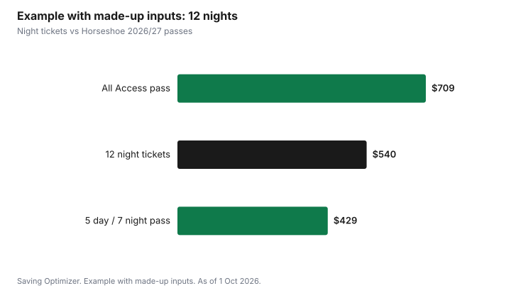

Sports · Canada
Local Ski Hill Season Passes in Ontario and Quebec: Early-Bird Pricing, Night Passes and Club Hills
A local ski hill season pass in Ontario or Quebec pays off when you will ski more days than the pass price divided by the day ticket you would otherwise buy. Most hills sell their lowest pass prices before an early-bird deadline in the fall, and many offer cheaper night or weekday passes that suit people who ski after work. Horseshoe Resort near Barrie, for example, lists its 2026/27 All Access adult pass at $709 until 31 October and $819 after, and a 5 day / 7 night pass at $429 early and $519 after. Private ski clubs work differently, with membership dues and sometimes an initiation fee. Count your realistic days, pick the pass that matches when you ski, and buy before the deadline.
Key takeaways
- Break-even days = season pass price ÷ the day ticket you would buy instead.
- Early-bird deadlines usually fall in the autumn. Horseshoe's 2026/27 early-bird runs 1 May to 31 October.
- Night and weekday passes cost much less and suit after-work skiers.
- Family passes can beat individual passes for households with several skiers.
- Private clubs charge membership dues and sometimes initiation fees, and may expect volunteer time.
- Example with made-up inputs: an adult skiing 12 nights saves with a night pass rather than night tickets.
Public resorts vs private ski clubs
Ontario and Quebec have two kinds of local hills. Public resorts sell day tickets to anyone and season passes to anyone who buys one. Private ski clubs, found in some parts of Ontario and Quebec, are run for their members; skiing is mainly for members and their guests, and joining usually means annual dues and often an initiation fee, sometimes with a waiting list. Clubs can offer quieter slopes and a community, but the first-year cost is higher.
| Factor | Public resort season pass | Private ski club membership |
|---|---|---|
| Who can ski | Anyone with a ticket or pass | Members and guests |
| Up-front cost | Season pass price | Annual dues; often an initiation fee |
| Commitment | One season | Often multi-year; sometimes volunteer duties |
| Crowds | Busier on peak days | Usually quieter |
| Best for | Most local skiers | Families who ski most weekends for years |
Early-bird deadlines and payment plans
Most local hills price season passes lowest in spring and early fall. Horseshoe Resort's 2026/27 page lists early-bird pricing from 1 May to 31 October and regular pricing from 1 November to mid-season. Snow Valley announced on its blog that 2026/27 season passes would be 25% off for a limited time starting 1 September. Deadlines and discounts vary by hill, so check each hill's season pass page in September and October. Some hills offer payment plans; read the terms for fees and what happens if you miss a payment.
| Pass and age | Early bird (1 May – 31 Oct) | Regular (1 Nov – mid-season) |
|---|---|---|
| All Access, adult (19–64) | $709 | $819 |
| All Access, junior (6–18) or senior (65+) | $609 | $719 |
| All Access, child (under 5) | $89 | $99 |
| All Access, family (2 adults + 2 juniors, or 1 adult + 3 juniors) | $2,379 | $2,769 |
| 5 day / 7 night, adult | $429 | $519 |
| 5 day / 7 night, junior or senior | $409 | $469 |
| 5 day / 7 night, family | $1,499 | $1,779 |
Horseshoe says the All Access pass covers alpine trails and lifts daily from 9 a.m. to 9 p.m. on operating days with no blackout dates, and the 5 day / 7 night pass covers Monday to Friday from 9 a.m. to 9 p.m. and Saturday and Sunday from 3:30 p.m. to 9 p.m. Family members on the family 5 day / 7 night pass must live at the same address.
Night and weekday passes
Many local hills in Ontario and Quebec have lights and stay open in the evening. A night or weekday pass is usually much cheaper than an all-access pass because it avoids the busiest times. At Horseshoe, the 2026/27 5 day / 7 night adult pass is $280 less than the All Access pass at early-bird prices ($429 compared with $709). If you ski after work or on weekday mornings, a restricted pass can cover most of your days for far less.
Peak periods
Hills charge more for day tickets during holiday periods. Horseshoe's lift ticket page lists the Winter Holiday Break (18 December to 3 January), Family Day weekend (12 to 15 February) and March Break (12 to 21 March) as holiday periods. If you plan to ski during those weeks, a pass that covers them avoids the highest day prices.
Family and student pricing
Family passes bundle several skiers for less than individual passes. At Horseshoe's 2026/27 early-bird prices, a family All Access pass for two adults and two juniors costs $2,379, compared with $2,636 for two adult and two junior passes bought separately (2 × $709 + 2 × $609). For children aged 6 to 12, the Canadian Ski Council's SnowStart Kidz Pass offers visits at participating hills for a low price; see kids' skiing and snowboarding. Students should ask each hill about student rates, which are not always published.
Break-even days vs lift tickets
Divide the pass price by the day ticket you would actually buy, for the time of day you ski. Use the online advance price if you would buy tickets ahead; see cheap lift tickets.
| Line | Your numbers |
|---|---|
| Pass price (with tax) | |
| Day or night ticket you would buy instead | |
| Break-even days = pass ÷ ticket | |
| Days you skied last season | |
| Days you realistically plan this season |
Be honest about weather, work and family. A pass bought for 15 days that gets used 6 times is an expensive pass. For a destination pass such as Epic or Ikon, see Epic vs Ikon vs a local pass.
Example with made-up inputs: an after-work skier
These numbers are an example with made-up inputs, except Horseshoe's pass prices. An adult skis evenings after work. They plan 12 nights this season. A made-up night ticket costs $45, so 12 nights cost $540. Horseshoe's early-bird 5 day / 7 night adult pass costs $429 before tax, which breaks even at 10 nights (429 ÷ 45 = 9.5). The All Access early-bird pass at $709 would need 16 nights at that ticket price.
| Option | Cost | Break-even nights at $45 |
|---|---|---|
| 12 night tickets at $45 (made up) | $540 | — |
| 5 day / 7 night pass, early bird | $429 | 10 |
| All Access pass, early bird | $709 | 16 |

Checklist
- Count the days and times you skied last season.
- List two or three nearby hills and their pass types.
- Compare all-access, night and weekday passes against day or night tickets.
- Check family and student pricing.
- Note each hill's early-bird deadline and buy before it.
- Read the terms: blackout dates, payment plans and refund rules.
Sources
- Horseshoe Resort, Season Pass 2026/2027, horseshoeresort.com, as of 1 Oct 2026. Early bird 1 May to 31 Oct and regular prices; pass hours; family rules.
- Horseshoe Resort, Lift Ticket and Rentals Pricing, horseshoeresort.com, as of 1 Oct 2026. Holiday periods.
- Snow Valley, Dropping September 1: 2026-2027 Season Pass Sale, snowvalley.ca, as of 1 Oct 2026. 25% off for a limited time from 1 September.
- Canadian Ski Council, SnowStart Kidz Pass, as of 1 Oct 2026.
- Family pass comparison and break-even figures are arithmetic on Horseshoe's prices. The night ticket price, nights skied and totals in the example are made-up inputs.
Frequently asked questions
When is the early-bird deadline for Ontario ski passes?
It varies by hill. Horseshoe Resort lists 2026/27 early-bird pricing from 1 May to 31 October, with regular pricing from 1 November. Check each hill's season pass page in September and October.
How much is a Horseshoe Resort season pass for 2026/27?
Horseshoe lists the All Access adult pass at $709 early bird and $819 regular, and the 5 day / 7 night adult pass at $429 early bird and $519 regular, as of 1 October 2026.
Is a night ski pass worth it?
If you ski mostly after work, often yes. Divide the night pass price by the night ticket price to find break-even nights, and compare with how many nights you will realistically ski.
What is the difference between a ski club and a ski resort?
A public resort sells tickets and passes to anyone. A private ski club is for members and their guests and usually charges annual dues and often an initiation fee.
How many days do I need to ski for a season pass to pay off?
Divide the pass price by the day ticket you would buy instead. Plan on the number of days you realistically ski, not the number you hope to.
Researched and drafted with AI assistance and fact-checked against official Canadian sources. How we create content.
Disclosure: Saving Optimizer may earn a commission if a partner link is added later, such as a ski pass, gear or cash-back offer type. No partnership with any resort is claimed on this page, and no hill is ranked. Education only. Prices are as published on 1 Oct 2026 and can change.